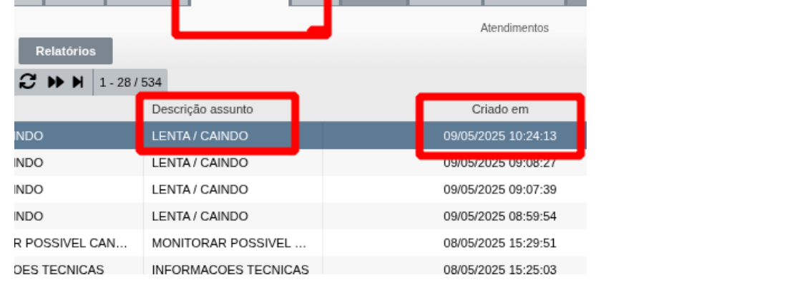

Programa de Atendimento com Visão 360º — Dominando a consulta obrigatória ao histórico no IXC, aplicação da Metodologia TBC e eliminação de retornos desnecessários.
Por que a reincidência é o maior gargalo da satisfação e como ela derruba nossa nota FALE.
Quando o cliente liga pela segunda ou terceira vez e o atendente pergunta "Qual é o seu problema?" ou manda reiniciar o roteador sem ler o histórico, o cliente sente que a Ateky não conversa entre si. Isso destrói a confiança instantaneamente.
A cada 10 contatos recebidos no suporte da Ateky, aproximadamente 2 são reincidências (20%). A maior parte ocorre porque a causa-raiz não foi investigada no primeiro contato ou porque o histórico no IXC foi ignorado.
Elevar a nota de qualidade FALE de 7,0 para 7,5+ até 04/12/2026. Atingir essa meta depende diretamente de acolher o cliente reincidente com respeito, entender o histórico e resolver de forma definitiva.
Regras extraídas da Wiki oficial do Helpdesk Ateky. O que abre e o que não abre no IXC.
▸ 1.º Suporte Reincidência: Abre o processo e encaminha para a fila do N2.
Para avaliar se o cliente tem direito a abertura de reincidência, nunca confie apenas na memória ou na palavra do cliente. Acesse a aba Atendimentos dentro do cadastro do cliente no IXC:

Passo a passo no IXC: Aba "Atendimentos" → Conferir a coluna "Criado em", o nome do processo e a data de fechamento da O.S. anterior.
Sair da postura reativa e burocrática para construir uma experiência consultiva e resolutiva.
A metodologia TBC é o choque de realidade criado por Márcia Treinamentos:
Médico não receita remédio sem perguntar os sintomas. No suporte, não mande reiniciar equipamentos sem antes checar:
Irritado, já ligou 2 vezes, sente descaso. Ameaça ir para o Procon ou cancelar na concorrência.
Teve o histórico lido, foi ouvido com empatia, recebeu explicação clara do que houve e viu o técnico agir.
Surpreendido pelo cuidado, transparência e agilidade. Indica a Ateky para vizinhos mesmo após um problema.
Situações do dia a dia do Helpdesk e a condução exata para zerar a frustração.
Histórico: Aberto "Lenta/Caindo" há 12 dias e há 3 dias. Cliente liga exasperado: "Essa internet de vocês não presta!"
"Qual o seu problema, senhor? Desliga o roteador 10 segundos da tomada. O senhor já testou no cabo? Aqui o sinal tá normal."
"Sr. Roberto, antes de mais nada vi aqui no IXC que o senhor já esteve em contato há 3 dias com a mesma queixa na sua TV. Peço sinceras desculpas pelo transtorno. Não vou mandar o senhor reiniciar nada. Como é a 3ª vez em menos de 15 dias, estou abrindo Suporte Reincidência direto para o N3 com prioridade de visita técnica para análise do sinal 5GHz no local."
Histórico: O técnico foi na casa do cliente ontem, ninguém atendeu a campainha e o chamado foi encerrado com diagnóstico "Sem Contato". Cliente liga hoje pedindo nova visita.
O atendente vê que teve visita ontem e abre "Suporte Reincidência". Erro! Isso infla os índices de reincidência incorretamente e distorce as auditorias de qualidade.
Conforme a Wiki Ateky: "Visita técnica em que o técnico não conseguiu contato com o cliente NÃO conta para reincidência." O atendente abre o processo correspondente à demanda (ex: Sem Conexão ou Lenta/Caindo) com novo agendamento alinhado.
Histórico: Cliente estava com internet bloqueada por inadimplência, pagou no Pix e relata instabilidade ao voltar.
Abrir processo de Sem Conexão ou Reincidência. O motivo da queda não foi defeito técnico da infraestrutura da fibra.
Utilizar obrigatoriamente o processo HELPDESK - CLIENTE POS BLOQUEIO. Isso não gera penalidade de reincidência técnica e classifica o evento corretamente na operação.
Teste seus reflexos de abertura de O.S. com base nas regras oficiais da Wiki Ateky.
Valide cada etapa antes de salvar o fechamento do atendimento no IXC.
Registro formal de capacitação institucional Ateky CS (N1 · N2 · N3).
| Colaborador | Nível | Horário Original | Horário Treinamento | Turma |
|---|---|---|---|---|
| Ana Luiza Machado Ferreti | N1 | Comercial | 09:30 | Turma Manhã |
| Edinelson Monteiro Santos | N1 | Comercial | 09:30 | Turma Manhã |
| Giovanna Rascke | N1 | Comercial | 09:30 | Turma Manhã |
| Maria Eduarda de Farias Chaves | N1 | Comercial | 09:30 | Turma Manhã |
| Raissa Warmeling Meurer | N1 | Comercial | 09:30 | Turma Manhã |
| Saiane Felix | N1 | Comercial | 09:30 | Turma Manhã |
| Elsa Danay | N2 | Comercial | 09:30 | Turma Manhã |
| Gilmara Azevedo | N2 | Comercial | 09:30 | Turma Manhã |
| Giovana Vicente | N2 | Comercial | 09:30 | Turma Manhã |
| Luis Felipe | N2 | Comercial | 09:30 | Turma Manhã |
| Paola Lima | N2 | Comercial | 09:30 | Turma Manhã |
| Lucas Jofre | N3 | Comercial | 09:30 | Turma Manhã |
| Mayra Zika | N3 | Comercial | 09:30 | Turma Manhã |
| Colaborador | Nível | Horário Original | Horário Treinamento | Turma |
|---|---|---|---|---|
| Gleidson Renan | N1 | 09:30 | 17:00 | Turma Tarde |
| Guilherme Matos | N1 | 09:30 | 17:00 | Turma Tarde |
| Nathanael Otaviano de Brum de Oliveira | N1 | 09:30 | 17:00 | Turma Tarde |
| Paulo Zeferino | N1 | 09:30 | 17:00 | Turma Tarde |
| Ryan Carlos | N1 | 09:30 | 17:00 | Turma Tarde |
| Stefany Vicente | N1 | 09:30 | 17:00 | Turma Tarde |
| Cainã dos Santos da Silva | N1 | 11:30 | 17:00 | Turma Tarde |
| Felipe de Souza Saque | N1 | 11:30 | 17:00 | Turma Tarde |
| Lucas Mattei Zomer | N1 | 11:30 | 17:00 | Turma Tarde |
| Rafael Alves da Silva | N1 | 11:30 | 17:00 | Turma Tarde |
| Rodrigo Bastos da Silva | N1 | 11:30 | 17:00 | Turma Tarde |
| Thiago Rossetti Zomer | N1 | 11:30 | 17:00 | Turma Tarde |
| Vanessa Kulkamp (Tuany) | N1 | 11:30 | 17:00 | Turma Tarde |
| Fabricio Boeing | N2 | 09:30 | 17:00 | Turma Tarde |
| Giovanna Soares | N2 | 09:30 | 17:00 | Turma Tarde |
| Andriel Zander | N2 | 11:30 | 17:00 | Turma Tarde |
| Josuelen | N2 | 11:30 | 17:00 | Turma Tarde |
| Paulo Vitor | N2 | 11:30 | 17:00 | Turma Tarde |
| Paulo Vinicius | N2 | 11:30 | 17:00 | Turma Tarde |
| Pedro Rogério | N3 | 09:30 | 17:00 | Turma Tarde |